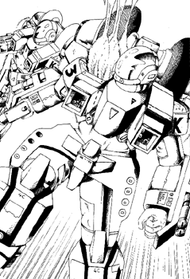

The following material is from
THE THIRD INVID
WAR, a fan supplement by
Dave Deitrich and
Chris
Meadows. Please feel free to use, copy, and distribute
it as you see fit. All we ask is that you give proper credit to us and do not
claim that it is your own work. Comments and suggestions are welcome.
THE VR-152 BATTLER II

BACKGROUND
The VR-152 Battler II was the first new cyclone design produced after
the Second Invid War. Designed to be the new "Grunt" of the REF, this
design sacrificed some of the Cyclone's fabled mobility for vast
increases in armor and weaponry. The Battler II is now the standard
front-line fighting mecha for the REF, and is usually used either as
support forces for Destroid and Hovertank units or independent heavy
infantry platoons. The Battler II is designed for the close assault
ground combat that made up most of the land battles of the First Invid
War.
The VR-152 Battler II cyclone is the largest and bulkiest of all
cyclones, with the exception of the VR-112 Samson. The cyclone itself
is very boxy and angular, resembling the older VR-052 Battler cyclone.
Battler II Pilots usually wear the heavier
CVR-4C heavy combat armor instead of the standard CVR-4 armor, in
anticipation of heavy hand-to-hand combat with enemy mecha.
SCHEMATICS
 Click on the icon to the left to view some pictures from the REF Cyclone
maintenance guide, document REF-8812-334-1199.
Click on the icon to the left to view some pictures from the REF Cyclone
maintenance guide, document REF-8812-334-1199.
RPG STATS
Model: VR-152 Battler II
Class: 2nd Generation M.O.S.P.E.A.D.A. Infantry Unit
Crew: One
M.D.C. BY LOCATION:
Motorcycle Mode Battlesuit Mode
---------------------------- ----------------------------
Headlight 5 Tires (2, rear) 5
Front Tire 5 Thrusters (rear) 75
Rear Tire 5 Forearm Shields (2) 120
Storage Box (2) 2 each Leg Shields (2) 150
Thrusters (rear) 75 Head 90
(1) Main Body 350 (1) Main Body 350
M.D.C. OF BODY ARMOR:
(2) CVR-4C (Heavy Combat Armor) 90
(2) CVR-4 (Standard Military Armor) 70
(2) CVR-3 (Standard Military Armor, Support Personnel) 50
NOTES:
- Depleting the M.D.C. of the Main Body will shut the mecha down
completely.
- Depleting the M.D.C. of the body armor will destroy it and very likely
kill the wearer (10% chance of survival).
The Second Generation Cyclones are equipped with laser resistant
ceramic armor, so laser weapons do only HALF damage. This does NOT
include any other energy attacks such as particle beams or ion blasts,
nor does it help against explosives.
SPECIFICATIONS
- Motorcycle Mode:
- Maximum Speed: 180 mph (288 kmph)
- Cruising Speed: 80 mph (128 kmph)
- Turbo Boost Fwd: 30 ft (9 m) horizontal
- Turbo Boost Up: 15 ft (4.5 m) vertical
- Battloid Mode:
- Running: 40 mph (64 kmph)
- Flying: 180 mph (288 kmph)
- Leaping: 20 ft (6 m)
- Thruster Leap: 80 ft (24 m)
- Height:
- Battloid: 7.6 ft (2.3 m)
- Motorcycle: 3.7 ft (1.1 m)
- Width:
- Battloid: 3.7 ft (1.1 m)
- Motorcycle: 2.0 ft (0.6 m)
- Length:
- Battloid: 3.7 ft (1.1 m)
- Motorcycle: 6.0 ft (1.8 m)
Weight: 250 lbs (113 kg)
- Cargo:
- The VR-152 has detachable cargo boxes that are connected to the
rear of the bike like saddlebags. The size of each container is 18
inches tall by 20 inches wide by 18 inches deep. A passenger can also
ride seated behind the driver. The VR-152 can hold 300 lbs (140 kg) in
addition to the rider. Reduce maximum speed by 20% for every additional
50 lbs (22 kg) over the limit and add -1 to dodge.
Unlike its predecessors, the storage boxes of the new cyclones do NOT
drop off when they convert to battloid mode. Instead, the boxes are
shifted to the lower back, just below the thruster packs and covering
the butt of the pilot. The passenger, however, isn't so lucky...
Main Engine: FF-600 Fusion/Protoculture Engine
- Range:
- 2 protoculture cells will power the cyclone for approximately 12
months before needing refueling. The backup system can operate on 1
protoculture cell for 6 months at no penalty. Constant flying will
drain the protoculture cells twice as quickly for all models. As a
final backup, the cyclone can run on fusion power alone for up to 400
miles on a full tank of fuel, but maximum speed is reduced 15% and
constant flying is impossible. The fusion engine runs off hydrogen, so
any hydrogen-rich liquid (like water or ammonia) can be used for fuel.
Extra gas from the fusion engine is released through an exhaust port.
- Color Scheme:
- Following the new painting scheme for most REF mecha, the
new military cyclones are colored based on where they are stationed.
Desert Cyclones are usually painted in a tan camouflage, Arctic Cyclones
are painted a flat white, etc. Most of the Battler IIs assigned to the
Icarus Mission were painted an olive green and grey in color, though
they are often repainted by resistance groups to match their terrain or
tastes. Each cyclone is streamlined in a color corresponding to the
position of the pilot. Enlisted Pilots have their cyclones streamlined
in Blue, Aces and low-ranking Officers in Red, and Platoon Leaders in
Green.
WEAPON SYSTEMS
- GR-103 MINI-MISSILE LAUNCHER (2). The main weapon of older
cyclones has remained mostly unchanged in the newer models. The launchers
have been updated with newer technology which makes them more
resilient to damage and easier to repair (+20% to repair rolls). In
motorcycle mode, the two missile launchers are side by side in the
nose of the cycle. In battloid mode, the missile launchers are
divided, with one on each shoulder of the mecha. Both launchers hold
6 mini-missiles (usually armor-piercing).
- Primary Purpose: Assault
- Secondary Purpose: Anti-Aircraft, Anti-Mecha
- Missile Type: Any type of REF Mini-missile EXCEPT Plasma.
Armor-piercing are standard-issue for the VR-152 Battler II.
- Mega-Damage: Varies with missile type.
- Rate of Fire: One at a time or in volleys of two, four, six, or
all. Remember, a volley counts as one melee attack regardless of the
number of missiles.
- Range: Varies with missile type; 20 ft to 1 mile.
- Payload: 6 missiles per each launcher, for a total capacity of 12.
- GR-187 HIP MISSILE LAUNCHERS (2). A new addition to modern
cyclones, the VR-152 Battler II comes automatically equipped with a
pair of GR-187s. These weapons are mounted on the hip/upper leg
shields in battloid mode and in the lower back of the cyclone in
motorcycle mode. It appears as four small tubes built directly into
the armored plate. The missiles can only fire in battloid mode.
- Primary Purpose: Assault
- Secondary Purpose: Anti-Aircraft, Anti-Mecha
- Missile Type: Any type of REF Mini-missile EXCEPT Plasma.
Armor-piercing are standard-issue for the VR-152 Battler II.
- Mega-Damage: Varies with missile type.
- Rate of Fire: One or two at a time.
- Range: Varies with missile type; 20 ft to 1 mile.
- Payload: 4 missiles per each launcher, for a total capacity of 8.
- MODULAR WEAPON SYSTEMS. As with all REF Cyclones, the arm shields
of the VR-152 Battler II are designed to interface with one of the GR-series
weapon modules. One weapon module can be mounted on each forearm shield,
and it is not necessary to mount the same modules on each shield. The
Cyclone's onboard computer system will automatically recognize which weapon
module is installed and adjust the HUD displays on the pilot's helmet
accordingly. Any GR-series weapon module can be used.
Typical VR-152s are assigned two
GR-200 MISSILE LAUNCHER/BEAM CANNON units, though different weapons
may be assigned if necessary or desired. Click HERE for a complete listing of cyclone weapon
modules.
- Hand-to-Hand Combat. Punch does 1D4 M.D. Kick does 1D4 M.D. (The
VR-152 Battler II has an equivalent strength of PS 50) Leap Kick
does 2D4 M.D. Body Flip or Body Block does 1D4 M.D.
- Any type of hand-held weapon can be fired by the pilot while in
cyclone armor, including the new Gallant
1000 Multi-Weapon System.
- Any other cyclone weapon pod can be substituted for the GR-200, both
from the newer cyclone models and the older ones.
STANDARD SENSORS AND EQUIPMENT FOR ALL MILITARY CYCLONES
- LASER-RESISTANT CERAMIC COATING: 1/2 damage from laser attacks.
- ENHANCED RADAR WITH HEADS-UP DISPLAY: Range: 10 miles. Can identify
and track up to 40 different targets.
- TARGETING COMPUTER: Uses helmet display instead of retractable sensor
of older models. Provides the pilot with +3 to strike with missiles and
+2 to strike with other weapon systems (Beam Cannons, Lasers, etc.).
Range: 4000 ft (609 m).
- RADIO COMMUNICATIONS: Boosts standard radio in CVR-series armors to
10 mile (16 km) range.
- MISCELLANEOUS INDICATORS: Altitude, Speed, Power status, Time, Date,
Direction, etc. All controlled by on-board computer.